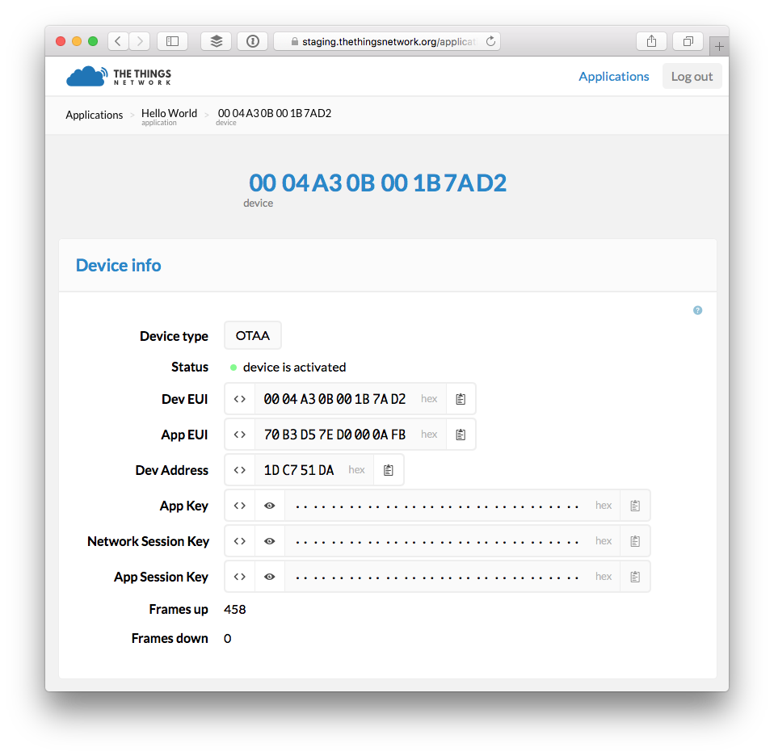

The Things Uno
The Things Uno is based off the Arduino Leonardo (not the Arduino Uno) with added Microchip LoRaWAN module. It is fully compatible with the Arduino IDE and existing shields.
It’s the perfect board to start prototyping your IoT ideas or make an existing project wireless with up to 10km range by simply swapping boards.
Prerequisites
- Access to staging.thethingsnetwork.org.
- The Things Uno beta board.
- Version 1.x of the The Things Network Arduino Library.
Quick Start
This guide will walk you through programming The Things Uno to send and receive your first message via The Things Network.
Setup Arduino IDE
- Download and install the latest Arduino Software (IDE).
- Navigate to Sketch > Include Library > Manage Libraries….
- Search for TheThingsNetwork and click the result to select it.
- Click the Install button which should appear:

The Arduino IDE will notify you of updates for the IDE and library automagically. 
See the Arduino Guide for more details.
Connect Device
- Use the included Micro-USB cable to connect The Things Uno to an USB power of your computer.
- In Arduino IDE select Tools > Board > Arduino Leonardo.
- Navigate to Tools > Port and select the port that identifies as Arduino Leonardo.
If you don’t see a port that identifies as Arduino Leonardo make sure The Things Uno’s power LED is on and check the cable and USB port you have used. See Arduino Troubleshooting for more suggestions.
Get your Dev EUI
The DevEUI is an unique address hard coded into the LoRa module. We use this address to register a device for OTAA with The Things Network.
- In the Arduino IDE open File > Examples > TheThingsNetwork > DeviceInfo.
- Select Sketch > Upload
Ctrl/⌘ Uto upload the sketch. - Select Tools > Serial Monitor
Ctrl/⌘ Shift Mto open the Serial Monitor. -
Soon, it should print a list with Device Information, including the DevEUI:
Device Information EUI: 0004A30B001B4569 Battery: 3294 AppEui: 70B3D57EF000003E DevEui: 0004A30B001B4569 Data Rate: 5 RX Delay 1: 1000 RX Delay 2: 2000 Total Airtime: 0.00 s Use the EUI to register the device for OTAA -------------------------------------------
Create Application
Messages to and from devices are routed via applications.
- On the dashboard, click create application.
- Enter an Application name.
- Click Create application.

You will be redirected to the newly created Application page where you find the App EUI and can proceed to register devices.

Register Device
Devices need to be registered with an application in order to send and receive messages via it.
-
In the Devices section of the Application page, click register device.

-
On the Register Device screen leave OTAA selected.
See the Dashboard / Register Device guide for more details on OTAA and its alternative ABP.
- Enter the Dev(ice) EUI you obtained earlier. When the format is correct, the Register button should become enabled.
- Leave the App Key to be randomly generated.
-
Click Register to finish and get redirected to the device page:

Activate Device
Now that you have registered the device you need to activate it from the device itself.
- In Arduino IDE, select File > Examples > TheThingsNetwork > Send.
-
Copy the App EUI and App Key from the device page to the example.
Use to show obfuscated keys and to copy.

For OTAA, the example calls
ttn.join()with theappEuiandappKeyyou declared.// .. // Runs once void setup() { // .. // Try OTAA with pauses of 6 seconds while(!ttn.join(appEui, appKey)){ delay(6000); } } -
Select Sketch > Upload
Ctrl/⌘ Uto upload the sketch.Uploads might fail if you still have the Serial Monitor open.
Send Message (uplink)
The example you uploaded calls ttn.sendBytes() to send an uplink message from the device to your application on The Things Network.
Messages are arrays of bytes so you need to encode any (sensor) data you’d like to send as bytes.
// Runs continuously with pauses of 10 seconds
void loop() {
// Declare and send an array of bytes
byte payload[] = { 0x48, 0x65, 0x6C, 0x6C, 0x6F };
ttn.sendBytes(payload, sizeof(payload));
delay(10000);
}
Decode Message
Still on the dashboard’s device page, you should see the messages coming in under the Messages section:

You could now use MQTT or the TTN Node for Node-RED to process the payload as it is, but we can also decode it first.
- Go back to the application page and click the edit link in the Application Info box.
-
Leave decoder selected, paste the following JavaScript code and click Save.
function (bytes) { return { message: String.fromCharCode.apply(null, bytes) }; } -
Go back to the application page and the next message should be decoded:

Receive Message (downlink)
Now let’s send a message back to the device. Devices can only receive the last message sent to them in response to a message they send themselves. This means that you need to poll The Things Network frequently to not miss any downlink messages. If you don’t have anything to send like our Hello, then you can call the poll() method in your loop() function.
-
In the Arduino IDE, add the following line to
setup()function to let it know what function to call when a message comes in:// Set callback for incoming messages ttn.onMessage(message); -
Then copy paste the actual function to the end of the sketch:
void message(const byte* payload, int length, int port) { debugSerial.print("Received: "); for (int i = 0; i < length; i++) { debugSerial.print((char) payload[i]); } debugSerial.println(); }The function will use
digitalWrite()to turn the LED on or off, based on the single byte message we receive. - Select Sketch > Upload
Ctrl/⌘ Uto upload the sketch. - Select Tools > Serial Monitor
Ctrl/⌘ Mto open the Serial Monitor. - On the dashboard, go to the application page.
- In the Devices box click on the Dev EUI of your device to go to its page.
-
In the Downlink box, paste the following hex-encoded list of bytes and click Send.
48 69 -
In the Arduino IDE, you should see the next successful transmission followed up with the response:
Sending: mac tx uncnf 1 with 5 bytes Successful transmission. Received 2 bytes Received: Hi
Resources
To take your The Things Uno to its limits, these resources may help you:
- The Things Network Arduino Guide.
- The Things Network Dashboard Guide.
- Labs Stories for The Things Uno.